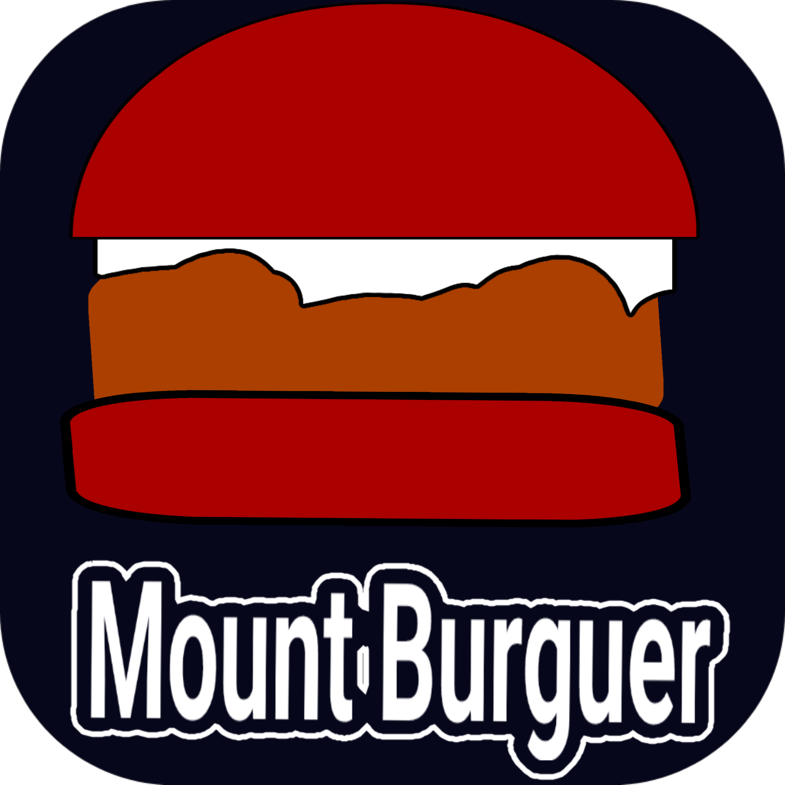
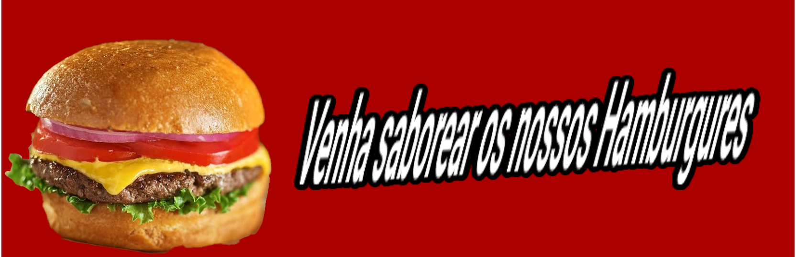
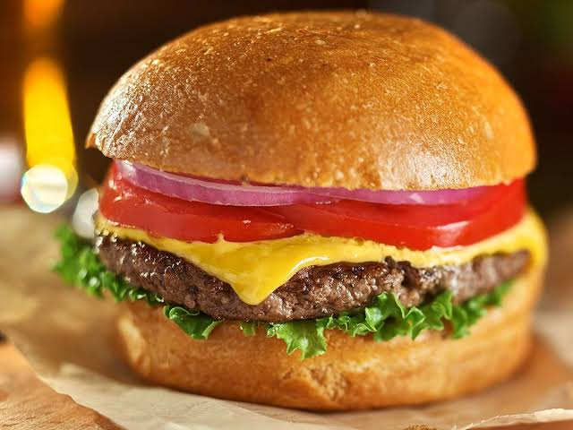

Read more: http://www.linhadecodigo.com.br/artigo/3469/criando-rollovers-com-javascript.aspx#ixzz8u0q1QIGh witdh=40 height=50>

A hamburgueria começou com um sonho simples, mas cheio de paixão. Lucas, o proprietário, era um jovem que cresceu naquele bairro. Desde pequeno, passava as tardes na praça, jogando futebol com os amigos, ouvindo histórias dos mais velhos e, claro, saboreando os hambúrgueres caseiros da sua avó, Dona Lourdes. Ela fazia os melhores hambúrgueres que ele já havia provado, e os segredos da receita foram passados para ele quando ainda era um adolescente. Mas, ao invés de abrir uma simples lanchonete, ele queria mais: queria criar um lugar onde as pessoas se sentissem em casa.
Com muito esforço e apoio da comunidade, Lucas transformou um antigo ponto comercial, um pequeno imóvel de fachada simples, em um espaço acolhedor, com paredes decoradas com fotos antigas do bairro, luzes suaves e mesas de madeira rústica. O cheiro delicioso de carne grelhada e pães frescos se espalhava pelas ruas, atraindo passantes curiosos e moradores fiéis. A comida tinha o sabor de casa, com ingredientes frescos e um toque especial de sua avó, que se tornou a estrela do cardápio.